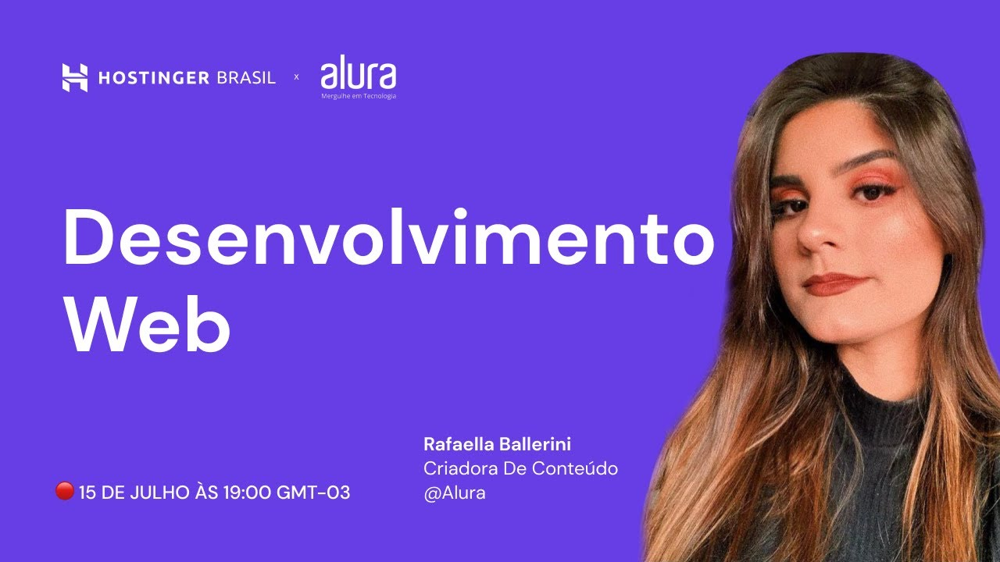

Fundadora de uma comunidade de mais de 30 mil membros: Comunidade Ballerini, onde compartilhamos conhecimento sobre as diferentes áreas da programação, tiramos dúvidas e fazemos networking. Cursei Medicina por três anos até descobrir minha paixão: desenvolvimento de software. Cursei Medicina por três anos até descobrir minha paixão: desenvolvimento de software. Cursei Medicina por três anos até descobrir minha paixão: desenvolvimento de software.
Cursou Medicina por três anos até descobrir sua paixão: desenvolvimento de software. Hoje trabalha como criadora de conteúdo de programação e tecnologia, guiando pessoas que desejam iniciar na área de desenvolvimento de software. Possui um canal no Youtube com mais de 180 mil inscritos e tem mais de 100 mil pessoas acompanhando seu conteúdo no Instagram. É fundadora de uma comunidade de mais de 30 mil membros: Comunidade Ballerini, onde compartilham conhecimento sobre as diferentes áreas da programação, tiram dúvidas e fazem networking. Já trabalhou como instrutora front-end na Alura, uma das maiores escolas de tecnologia do Brasil.
Participou como árbitra durante a etapa estadual da Olimpíada Brasileira de Robótica em Santa Catarina, uma iniciativa para a popularização e difusão da ciência e tecnologia em escolas por todo o país.
O desafio foi o "Create a Mascot", no qual devíamos achar um meio de transformar os dados científicos da NASA em um formato para crianças aprenderem. Nossa ideia foi criar um aplicativo, voltado para o público de 2-6 anos, que tem como mascote um foguete, levando as crianças em uma jornada pelo sistema solar.
Acompanhe seu conteúdo: Aqui